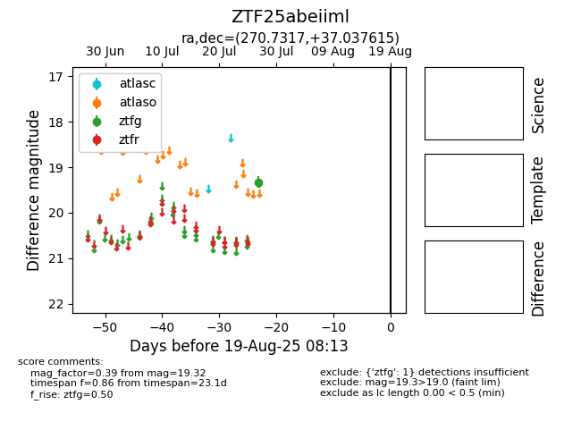

Target ZTF25abeiiml at 2025-08-19 09:59, see:
FINK: fink-portal.org/ZTF25abeiiml
Lasair: lasair-ztf.lsst.ac.uk/objects/ZTF25abeiiml
ALeRCE: alerce.online/object/ZTF25abeiiml
alt names
ZTF25abeiiml (ztf,fink)
coordinates:
equatorial (ra, dec) = (270.7317,+37.03761)
galactic (l, b) = (63.4264,+25.08180)
photometry
last ztfg=19.32
1 ztfg detections
